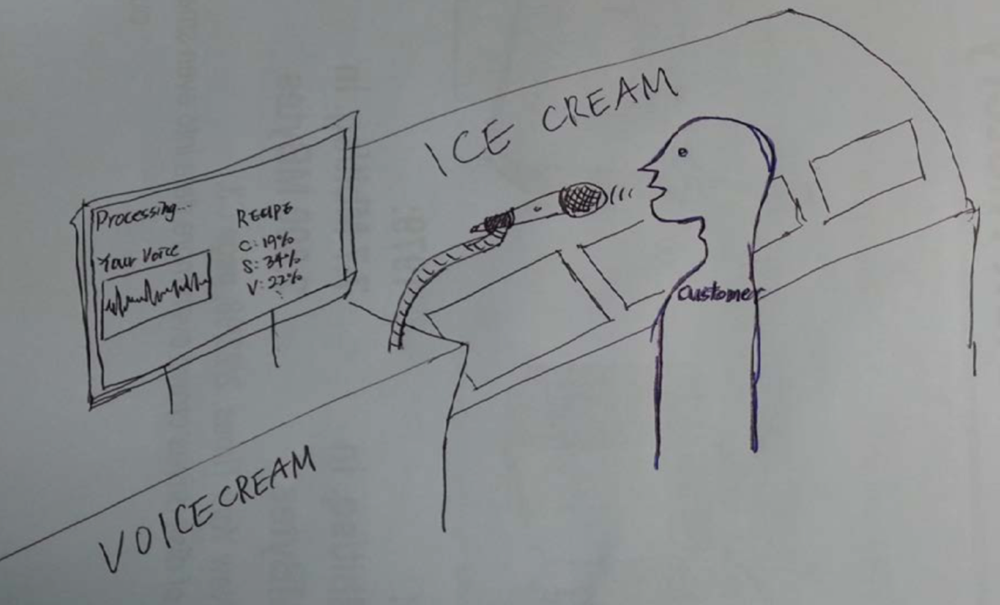

Overview
This project was for visualizing human voices and mapping them into icecream flavors.
Details
Human beings have different personalities and most of them are related to their appearances, voices, textures, or even smells. However, it is hard to describe a person with the sense of taste. For extending ways of identifying each person, I've come up with this project - mapping person to specific tastes.
In order to do this, I've assumed that each person's taste can be linked with their voices, because words for describing one's voice have similarities with words for describing flavors. For example, we usually call someone as a 'sweet' person, and the word 'sweet' is also used in describing flavors. From this assumption, I thought it would be interesting to think about scenarios of people at the ice cream store.

So, I designed this application for ice cream stores. If a person came into the store, and says "One ice cream, please", then the voice analyzer will detect the frequency, tone, speed of the voice, and recommend specific ice cream flavors to the customer. Therefore, each customer can have their customized ice cream flavors, and they will get other flavors based on their daily feelings.
I implemented the prototype of this idea with Processing.